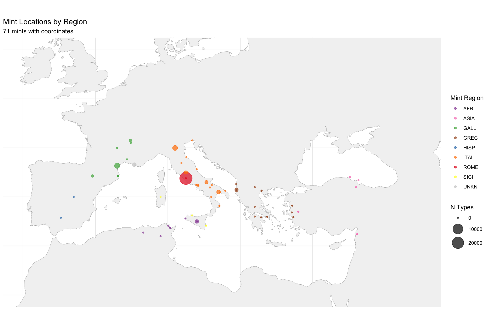
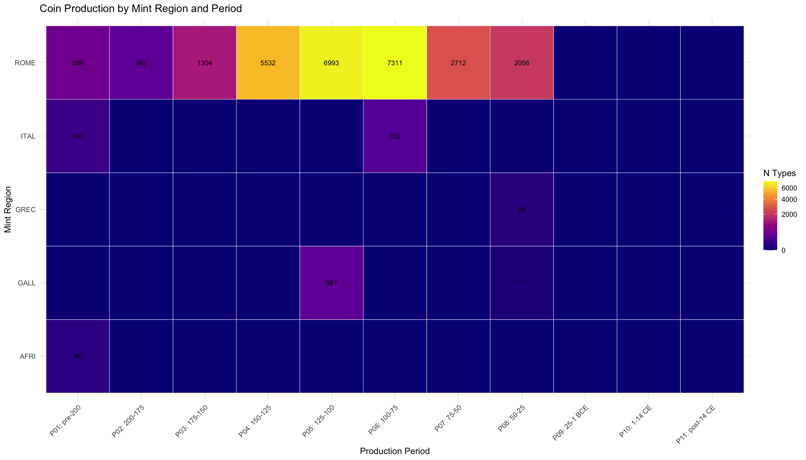
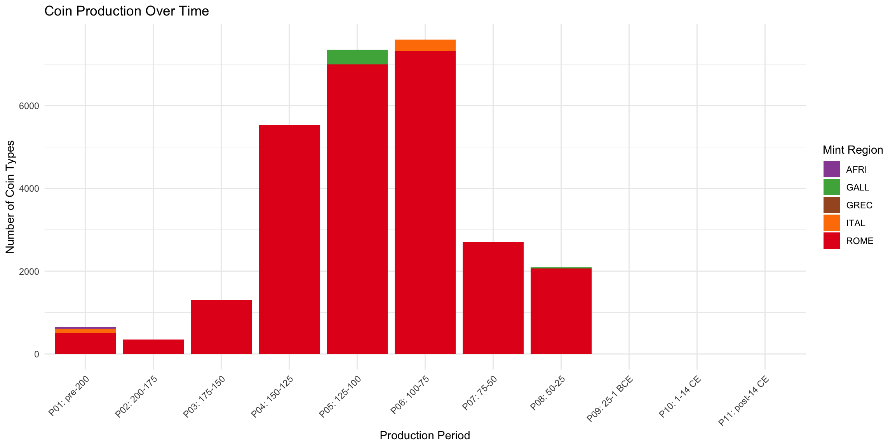
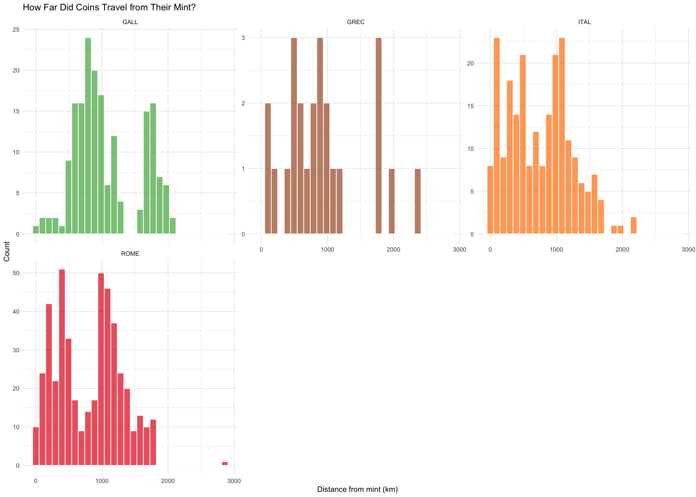
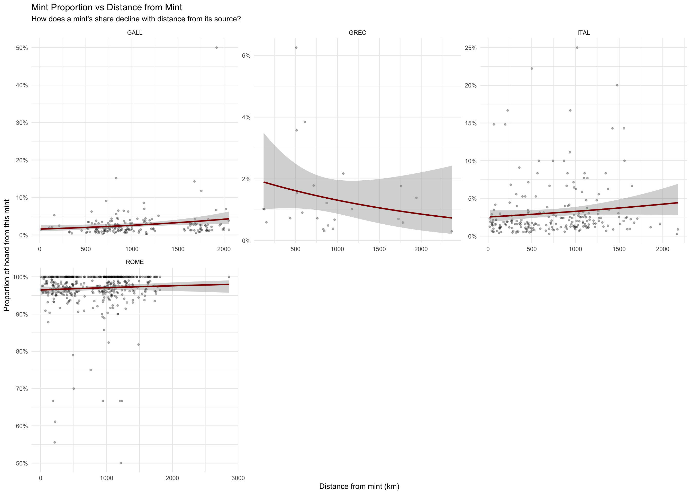
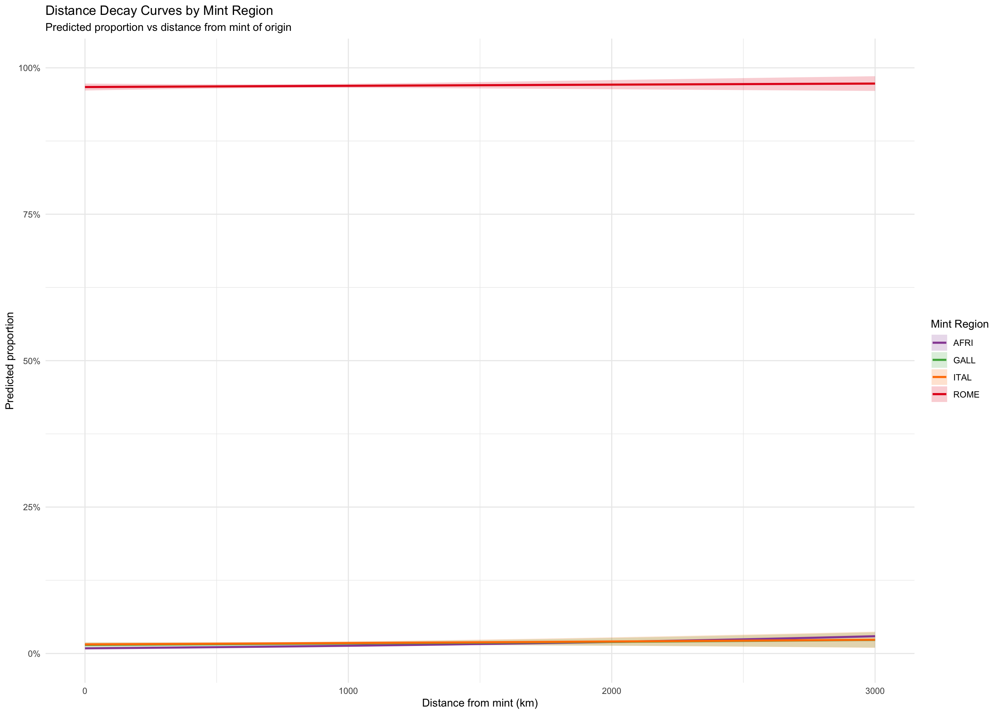
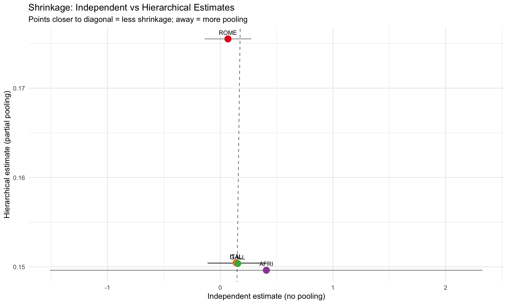

library(tidyverse)library(sf)library(httr)library(jsonlite)library(knitr)library(patchwork)library(broom)# For hierarchical modelslibrary(lme4)# Check if brms is available for full Bayesianbrms_available <-requireNamespace("brms", quietly =TRUE)if (brms_available) {library(brms)cat("✓ brms available for Bayesian hierarchical models\n")} else {cat("ℹ brms not available; using lme4 for mixed effects\n")}
# First, ensure mint_coords has mint_id properly set for joining# The coordinates may have come from mint_id_clean (from URI), so unify themif ("mint_id_clean"%in%names(mint_coords)) {# Use mint_id if available, otherwise mint_id_clean mint_coords <- mint_coords %>%mutate(mint_id =coalesce(mint_id, mint_id_clean))}# Debug: show what we're joiningcat("Mints available for joining:\n")
Mints available for joining:
Code
cat(" Total mints:", nrow(mint_coords), "\n")
Total mints: 74
Code
cat(" With coordinates:", sum(!is.na(mint_coords$mint_lat)), "\n")
With coordinates: 71
Code
cat(" With region:", sum(!is.na(mint_coords$mint_region)), "\n")
With region: 74
Code
# Show sample of mint_coordscat("\nSample of mint_coords:\n")
library(rnaturalearth)library(rnaturalearthdata)# Get basemapland <-ne_countries(scale ="medium", returnclass ="sf") %>%st_union()# Mint locationsmint_sf <- mint_coords %>%filter(!is.na(mint_lat), !is.na(mint_lon)) %>%st_as_sf(coords =c("mint_lon", "mint_lat"), crs =4326, remove =FALSE)# Color palette for regionsregion_colors <-c("ROME"="#E41A1C","ITAL"="#FF7F00","HISP"="#377EB8","GALL"="#4DAF4A","AFRI"="#984EA3","SICI"="#FFFF33","GREC"="#A65628","ASIA"="#F781BF","PONT"="#999999","MILI"="#000000","UNKN"="#CCCCCC")ggplot() +geom_sf(data = land, fill ="grey95", color ="grey70") +geom_sf(data = mint_sf, aes(color = mint_region, size = n_types), alpha =0.7) +scale_color_manual(values = region_colors, name ="Mint Region") +scale_size_continuous(name ="N Types", range =c(1, 10), trans ="sqrt") +coord_sf(xlim =c(-10, 45), ylim =c(30, 55)) +labs(title ="Mint Locations by Region",subtitle =paste(sum(!is.na(mint_coords$mint_lat)), "mints with coordinates") ) +theme_minimal() +theme(axis.text =element_blank(), axis.title =element_blank())

4.2 2.2 Production Volume by Region and Period
Code
# Count types by mint region and production periodproduction <- chrr_analysis %>%filter(mint_region !="UNKN") %>%group_by(mint_region, prod_period) %>%summarise(n_types =n(), .groups ="drop") %>%complete(mint_region, prod_period, fill =list(n_types =0))# Heatmapggplot(production, aes(x = prod_period, y = mint_region, fill = n_types)) +geom_tile(color ="white") +geom_text(aes(label =ifelse(n_types >0, n_types, "")), size =3) +scale_fill_viridis_c(option ="plasma", name ="N Types", trans ="sqrt") +labs(title ="Coin Production by Mint Region and Period",x ="Production Period",y ="Mint Region" ) +theme_minimal() +theme(axis.text.x =element_text(angle =45, hjust =1))

Code
# Time series of productionggplot(production, aes(x = prod_period, y = n_types, fill = mint_region)) +geom_col(position ="stack") +scale_fill_manual(values = region_colors, name ="Mint Region") +labs(title ="Coin Production Over Time",x ="Production Period",y ="Number of Coin Types" ) +theme_minimal() +theme(axis.text.x =element_text(angle =45, hjust =1))

4.3 2.3 Distance Distributions by Mint Region
Code
# Filter to regions with enough datamajor_regions <- hoard_mint %>%filter(mint_region %in%c("ROME", "HISP", "GALL", "GREC", "ASIA", "ITAL", "SICI")) %>%filter(!is.na(dist_from_mint_km))ggplot(major_regions, aes(x = dist_from_mint_km, fill = mint_region)) +geom_histogram(bins =30, alpha =0.7, color ="white") +facet_wrap(~mint_region, scales ="free_y", ncol =3) +scale_fill_manual(values = region_colors) +labs(title ="How Far Did Coins Travel from Their Mint?",x ="Distance from mint (km)",y ="Count" ) +theme_minimal() +theme(legend.position ="none")

4.4 2.4 Distance vs Proportion by Mint Region
Code
ggplot(major_regions, aes(x = dist_from_mint_km, y = prop_mint)) +geom_point(alpha =0.3, size =1) +geom_smooth(method ="glm", method.args =list(family ="quasibinomial"),color ="darkred", se =TRUE) +facet_wrap(~mint_region, scales ="free", ncol =3) +scale_y_continuous(labels = scales::percent_format()) +labs(title ="Mint Proportion vs Distance from Mint",subtitle ="How does a mint's share decline with distance from its source?",x ="Distance from mint (km)",y ="Proportion of hoard from this mint" ) +theme_minimal()

5 CHUNK 3: Diffusion Model Fitting
5.1 3.1 Prepare Modeling Data
Code
# Create modeling dataset with required columnsmodel_data <- hoard_mint %>%filter( mint_region %in%c("ROME", "HISP", "GALL", "GREC", "ASIA", "ITAL", "SICI", "AFRI"),!is.na(dist_from_mint_km),!is.na(cos_bearing), n_total >=5# Minimum hoard size ) %>%mutate(# Scale distance for numerical stabilitydist_scaled = dist_from_mint_km /1000, # Units of 1000 km# Log transform for age (add 1 to avoid log(0))log_circ_age =log(mean_circ_age +1),# Ensure factorsmint_region =factor(mint_region),hoard_id =factor(hoard_id) )cat("Model data:", nrow(model_data), "observations\n")
# Create predictions for each regionpred_data <-expand_grid(dist_scaled =seq(0, 3, 0.1),cos_bearing =0,sin_bearing =0)predictions <-map_dfr(names(region_models), function(r) { model <- region_models[[r]]if (is.null(model)) return(NULL) preds <-predict(model, newdata = pred_data, type ="response", se.fit =TRUE) pred_data %>%mutate(mint_region = r,pred = preds$fit,se = preds$se.fit,lower = pred -1.96* se,upper = pred +1.96* se,dist_km = dist_scaled *1000 )})ggplot(predictions, aes(x = dist_km, y = pred, color = mint_region, fill = mint_region)) +geom_ribbon(aes(ymin = lower, ymax = upper), alpha =0.2, color =NA) +geom_line(linewidth =1) +scale_color_manual(values = region_colors) +scale_fill_manual(values = region_colors) +scale_y_continuous(labels = scales::percent_format(), limits =c(0, 1)) +labs(title ="Distance Decay Curves by Mint Region",subtitle ="Predicted proportion vs distance from mint of origin",x ="Distance from mint (km)",y ="Predicted proportion",color ="Mint Region",fill ="Mint Region" ) +theme_minimal()

5.4 3.4 Hierarchical Model (Partial Pooling)
Code
# Check we have enough regions for hierarchical modeln_regions <-n_distinct(model_data$mint_region)cat("Number of mint regions in model data:", n_regions, "\n")
Number of mint regions in model data: 5
Code
cat("Observations per region:\n")
Observations per region:
Code
print(table(model_data$mint_region))
AFRI GALL GREC ITAL ROME
34 180 24 224 423
Code
if (n_regions <2) {cat("\n⚠ Only one mint region with data - cannot fit hierarchical model\n")cat("Falling back to simple linear model\n")# Fallback: simple model without random effects hierarchical_model <-lm(qlogis(pmax(pmin(prop_mint, 0.999), 0.001)) ~ dist_scaled + cos_bearing + sin_bearing,data = model_data,weights =sqrt(n_total) ) use_hierarchical <-FALSE} else {# Fit mixed effects model with random slopes by mint region hierarchical_model <-lmer(qlogis(pmax(pmin(prop_mint, 0.999), 0.001)) ~ dist_scaled + cos_bearing + sin_bearing + (1+ dist_scaled | mint_region),data = model_data,weights =sqrt(n_total),control =lmerControl(optimizer ="bobyqa", optCtrl =list(maxfun =100000)) ) use_hierarchical <-TRUE}summary(hierarchical_model)
Linear mixed model fit by REML ['lmerMod']
Formula:
qlogis(pmax(pmin(prop_mint, 0.999), 0.001)) ~ dist_scaled + cos_bearing +
sin_bearing + (1 + dist_scaled | mint_region)
Data: model_data
Weights: sqrt(n_total)
Control: lmerControl(optimizer = "bobyqa", optCtrl = list(maxfun = 1e+05))
REML criterion at convergence: 2896
Scaled residuals:
Min 1Q Median 3Q Max
-2.65855 -0.63255 -0.01002 0.80313 2.97529
Random effects:
Groups Name Variance Std.Dev. Corr
mint_region (Intercept) 1.469e+01 3.83331
dist_scaled 1.356e-04 0.01164 1.00
Residual 1.134e+01 3.36730
Number of obs: 885, groups: mint_region, 5
Fixed effects:
Estimate Std. Error t value
(Intercept) -2.78526 1.71677 -1.622
dist_scaled 0.15480 0.07952 1.947
cos_bearing -0.11422 0.07602 -1.503
sin_bearing 0.01637 0.05164 0.317
Correlation of Fixed Effects:
(Intr) dst_sc cs_brn
dist_scaled 0.026
cos_bearing -0.012 0.075
sin_bearing -0.002 0.065 0.013
optimizer (bobyqa) convergence code: 0 (OK)
boundary (singular) fit: see help('isSingular')
5.5 3.5 Extract Hierarchical Coefficients
Code
if (use_hierarchical) {# Fixed effects (population average) fixed_eff <-fixef(hierarchical_model)cat("\nFixed effects (population average):\n")print(fixed_eff)# Random effects (mint-specific deviations) random_eff <-ranef(hierarchical_model)$mint_regioncat("\nRandom effects (deviations from population average):\n")print(random_eff)# Combine to get mint-specific coefficients hier_coefs <- random_eff %>%rownames_to_column("mint_region") %>%rename(intercept_dev =`(Intercept)`,slope_dev = dist_scaled ) %>%mutate(intercept_total = fixed_eff["(Intercept)"] + intercept_dev,slope_total = fixed_eff["dist_scaled"] + slope_dev,or_per_1000km =exp(slope_total) )cat("\nMint-specific coefficients (with partial pooling):\n")kable(hier_coefs, digits =3)} else {# Fallback: use coefficients from simple model fixed_eff <-coef(hierarchical_model)cat("\nFixed effects (simple model - no pooling):\n")print(fixed_eff)# Create single-row hier_coefs for compatibility hier_coefs <-tibble(mint_region =unique(model_data$mint_region)[1],intercept_dev =0,slope_dev =0,intercept_total = fixed_eff["(Intercept)"],slope_total = fixed_eff["dist_scaled"],or_per_1000km =exp(fixed_eff["dist_scaled"]) )cat("\nNote: Only one region available, using pooled estimates\n")}
Fixed effects (population average):
(Intercept) dist_scaled cos_bearing sin_bearing
-2.78525869 0.15479626 -0.11421802 0.01636517
Random effects (deviations from population average):
(Intercept) dist_scaled
AFRI -1.732167 -0.005261253
GALL -1.481389 -0.004499544
GREC -2.162850 -0.006569402
ITAL -1.457424 -0.004426755
ROME 6.833830 0.020756955
Mint-specific coefficients (with partial pooling):
mint_region
intercept_dev
slope_dev
intercept_total
slope_total
or_per_1000km
AFRI
-1.732
-0.005
-4.517
0.150
1.161
GALL
-1.481
-0.004
-4.267
0.150
1.162
GREC
-2.163
-0.007
-4.948
0.148
1.160
ITAL
-1.457
-0.004
-4.243
0.150
1.162
ROME
6.834
0.021
4.049
0.176
1.192
5.6 3.6 Compare Independent vs Hierarchical Estimates
Code
if (use_hierarchical &&nrow(hier_coefs) >1) {# Combine estimates comparison <- distance_effects %>% dplyr::select(mint_region, ind_estimate = estimate, ind_se = std.error) %>%left_join( hier_coefs %>% dplyr::select(mint_region, hier_estimate = slope_total),by ="mint_region" ) %>%filter(!is.na(hier_estimate))if (nrow(comparison) >1) {ggplot(comparison, aes(x = ind_estimate, y = hier_estimate)) +geom_abline(slope =1, intercept =0, linetype ="dashed", color ="grey50") +geom_errorbarh(aes(xmin = ind_estimate -1.96*ind_se, xmax = ind_estimate +1.96*ind_se),height =0, alpha =0.5) +geom_point(aes(color = mint_region), size =4) +geom_text(aes(label = mint_region), vjust =-1, size =3) +scale_color_manual(values = region_colors) +labs(title ="Shrinkage: Independent vs Hierarchical Estimates",subtitle ="Points closer to diagonal = less shrinkage; away = more pooling",x ="Independent estimate (no pooling)",y ="Hierarchical estimate (partial pooling)" ) +theme_minimal() +theme(legend.position ="none") } else {cat("Not enough regions to compare estimates\n") }} else {cat("Hierarchical model not fitted or only one region - skipping comparison plot\n")}

5.7 3.7 Add Circulation Age Effect
Code
if (use_hierarchical) {# Model with circulation age age_model <-lmer(qlogis(pmax(pmin(prop_mint, 0.999), 0.001)) ~ dist_scaled + cos_bearing + sin_bearing + log_circ_age + (1+ dist_scaled | mint_region),data = model_data %>%filter(!is.na(log_circ_age)),weights =sqrt(n_total),control =lmerControl(optimizer ="bobyqa", optCtrl =list(maxfun =100000)) )cat("\nModel with circulation age:\n")summary(age_model)# Compare AICcat("\n\nModel comparison:\n")cat("Without age:", AIC(hierarchical_model), "\n")cat("With age:", AIC(age_model), "\n")} else {# Fallback: simple model with age age_model <-lm(qlogis(pmax(pmin(prop_mint, 0.999), 0.001)) ~ dist_scaled + cos_bearing + sin_bearing + log_circ_age,data = model_data %>%filter(!is.na(log_circ_age)),weights =sqrt(n_total) )cat("\nModel with circulation age (simple, no random effects):\n")summary(age_model)}
Model with circulation age:
Model comparison:
Without age: 2912.027
With age: 2884.034
cat("================================================================ROMAN COIN CIRCULATION MODEL: SUMMARY================================================================1. MINT REGIONS CLASSIFIED")
================================================================
ROMAN COIN CIRCULATION MODEL: SUMMARY
================================================================
1. MINT REGIONS CLASSIFIED
Code
cat(" Total mints:", nrow(mint_coords), "\n")
Total mints: 74
Code
cat(" With coordinates:", sum(!is.na(mint_coords$mint_lat)), "\n")
Regions: ROME, UNKN, GALL, ITAL, AFRI, GREC, SICI, HISP, ASIA
Code
cat("2. DIFFUSION PARAMETERS")
2. DIFFUSION PARAMETERS
Code
if (use_hierarchical) {cat(" Model type: Hierarchical (partial pooling)\n")cat(" Population-level distance decay:", round(fixef(hierarchical_model)["dist_scaled"], 3), "\n")} else {cat(" Model type: Simple (no pooling - single region only)\n")cat(" Distance decay:", round(coef(hierarchical_model)["dist_scaled"], 3), "\n")}
Model type: Hierarchical (partial pooling)
Population-level distance decay: 0.155
Code
cat(" (More negative = faster decay with distance)\n")
(More negative = faster decay with distance)
Code
cat("3. MINT-SPECIFIC DECAY RATES")
3. MINT-SPECIFIC DECAY RATES
Code
if (use_hierarchical &&exists("random_eff") &&nrow(random_eff) >0) {for (r inrownames(random_eff)) { total_slope <- fixed_eff["dist_scaled"] + random_eff[r, "dist_scaled"]cat(" ", r, ":", round(total_slope, 3), "\n") }} else {cat(" Single pooled estimate used for all regions\n")}
rome_validation <- validation %>%filter(mint_region =="ROME")if (nrow(rome_validation) >0) {cat(" Overall correlation (Rome):", round(cor(rome_validation$observed_prop, rome_validation$expected_prop, use ="complete.obs"), 3), "\n")} else {cat(" No Rome validation data available\n")}
Overall correlation (Rome): -0.019
Code
cat("5. OUTPUTS GENERATED - Probability surfaces for each mint region - Dominant mint map - Compositional entropy map - Catchment area visualization - Residual analysis identifying anomalous hoards================================================================")
5. OUTPUTS GENERATED
- Probability surfaces for each mint region
- Dominant mint map
- Compositional entropy map
- Catchment area visualization
- Residual analysis identifying anomalous hoards
================================================================
Writing layer `hex_predictions' to data source
`circulation_probability_surface.gpkg' using driver `GPKG'
Writing 1461 features with 17 fields and geometry type Polygon.